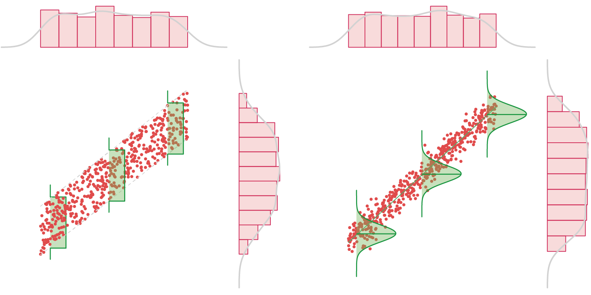

Recap on Correlation
Correlation of cardiac patients: A Study Of Experimenters
Introduction to Linear Regression
Recap on Correlation
Correlation of cardiac patients: A Study Of Experimenters
Introduction to Linear Regression
Two quantitative variables association:
- Form? Linear
- Direction
- Strength
Correlation: $\rho, r$
Note: Correlation, like a lot of other statistical descriptors/tests, assumes normality of the data. How could you check if a variable is normally distributed?
A dataset is homoscedastic if the variance at any given portion is the same as all others, i.e. constant.
A dataset is heteroscedastic if the variance at any given portion is different from all others, i.e. variable.

Because correlation gives an information about the strength of an association (how close are the data point to the imaginary line), if the dataset is heteroscedastic then correlation won't give you a very representative result.
Determine the metric, ensure high-quality data.


$\bar{x}$, $\tilde{x}$, $\mathcal{N}(\bar{x},s)$, $r$, ..., $SE$, $s^2$, 95%CI, ...
$\delta$, $t$, $z$, $\Delta\bar{x}$, $\mathbb{F}$, $\chi^2$,...
$H_0$, $H_a$, $\bar{X}_0$, $\pi_0$, $\rho_0$, ...
$\delta$, $\rho$, $R^2$, $\chi^2$, ...
We've included the correlation coefficient, $r$, in the list of statistics of interest, let's look at an example.
A hospital wanted to conduct a quality of service assessment across two of their lead cardiologists. To conduct their assessment, they asked the two doctors to measure the resting cardiac output of 23 of the hospital staff.
The two doctors, Observer A and Observer B recorded the data shown in the table.
The hospital wants to know, is there a statistically significant correlation between the observers?
Management flows down the requirement that in order to consider them significant, correlation shall be tested at the $\alpha=0.05$ level, i.e. $p(r)<\alpha$.
What are our statistical hypotheses?
$H_0:\, r = \rho$, $H_a:\, r \neq \rho$
Where $\rho$ is the population correlation, and the $t$ statistic for $n-2$ DOF is: $$t=\frac{r-\rho}{\sqrt{\frac{1-r^2}{n-2}}}.$$
| Patient | Observer A | Observer B |
|---|---|---|
| 1 | 4.8 | 5.8 |
| 2 | 5.6 | 6.1 |
| 3 | 6 | 7.7 |
| 4 | 6.4 | 7.8 |
| 5 | 6.5 | 7.6 |
| 6 | 6.6 | 8.1 |
| 7 | 6.8 | 8 |
| 8 | 7 | 8.1 |
| 9 | 7 | 6.6 |
| 10 | 7.2 | 8.1 |
| 11 | 7.4 | 9.5 |
| 12 | 7.6 | 9.6 |
| 13 | 7.7 | 8.5 |
| 14 | 7.7 | 9.5 |
| 15 | 8.2 | 9.1 |
| 16 | 8.2 | 10 |
| 17 | 8.3 | 9.1 |
| 18 | 8.5 | 10.8 |
| 19 | 9.3 | 11.5 |
| 20 | 10.2 | 11.5 |
| 21 | 10.4 | 11.2 |
| 22 | 10.6 | 11.5 |
| 23 | 11.4 | 12 |
Step 1: Visualize the data!
Step 2: Calculate $s_{A}^2$ and $s_{B}^2$.
$\bar{A} = 7.8$ and $\bar{B} = 9.03$
| Patient | Observer A | Observer B | $(x_i-\bar{x})^2$ | $(y_i-\bar{y})^2$ |
|---|---|---|---|---|
| 1 | 4.8 | 5.8 | 9.000 | 10.436 |
| 2 | 5.6 | 6.1 | 4.840 | 8.587 |
| 3 | 6 | 7.7 | 3.240 | 1.770 |
| 4 | 6.4 | 7.8 | 1.960 | 1.514 |
| 5 | 6.5 | 7.6 | 1.690 | 2.046 |
| 6 | 6.6 | 8.1 | 1.440 | 0.866 |
| 7 | 6.8 | 8 | 1.000 | 1.062 |
| 8 | 7 | 8.1 | 0.640 | 0.866 |
| 9 | 7 | 6.6 | 0.640 | 5.907 |
| 10 | 7.2 | 8.1 | 0.360 | 0.866 |
| 11 | 7.4 | 9.5 | 0.160 | 0.220 |
| 12 | 7.6 | 9.6 | 0.040 | 0.324 |
| 13 | 7.7 | 8.5 | 0.010 | 0.281 |
| 14 | 7.7 | 9.5 | 0.010 | 0.220 |
| 15 | 8.2 | 9.1 | 0.160 | 0.005 |
| 16 | 8.2 | 10 | 0.160 | 0.940 |
| 17 | 8.3 | 9.1 | 0.250 | 0.005 |
| 18 | 8.5 | 10.8 | 0.490 | 3.131 |
| 19 | 9.3 | 11.5 | 2.250 | 6.099 |
| 20 | 10.2 | 11.5 | 5.760 | 6.099 |
| 21 | 10.4 | 11.2 | 6.760 | 4.707 |
| 22 | 10.6 | 11.5 | 7.840 | 6.099 |
| 23 | 11.4 | 12 | 12.960 | 8.818 |
Step 3: Calculate $s_{AB}$.
Step 4: Calculate Pearson's correlation coefficient: $r=\frac{s_{AB}}{S_AS_B}=0.935$.
Step 5: Calculate $t$: $t=\frac{r-\rho}{\sqrt{\frac{1-r^2}{n-2}}}=\frac{0.935}{\sqrt{\frac{1-0.935^2}{21}}}=12.04$.
Step 6: Determine p-value from the $t$-distribution (two-sided!):
$t_{0.025,21}=2.0796 < 12.04 \therefore\phantom{}$
Reject $H_0$!
| Patient | Observer A | Observer B | $(x_i-\bar{x})^2$ | $(y_i-\bar{y})^2$ | $(x_i-\bar{x})(y_i-\bar{y})$ |
|---|---|---|---|---|---|
| 1 | 4.8 | 5.8 | 9.000 | 10.436 | 9.691 |
| 2 | 5.6 | 6.1 | 4.840 | 8.587 | 6.447 |
| 3 | 6 | 7.7 | 3.240 | 1.770 | 2.395 |
| 4 | 6.4 | 7.8 | 1.960 | 1.514 | 1.723 |
| 5 | 6.5 | 7.6 | 1.690 | 2.046 | 1.860 |
| 6 | 6.6 | 8.1 | 1.440 | 0.866 | 1.117 |
| 7 | 6.8 | 8 | 1.000 | 1.062 | 1.030 |
| 8 | 7 | 8.1 | 0.640 | 0.866 | 0.744 |
| 9 | 7 | 6.6 | 0.640 | 5.907 | 1.944 |
| 10 | 7.2 | 8.1 | 0.360 | 0.866 | 0.558 |
| 11 | 7.4 | 9.5 | 0.160 | 0.220 | -0.188 |
| 12 | 7.6 | 9.6 | 0.040 | 0.324 | -0.114 |
| 13 | 7.7 | 8.5 | 0.010 | 0.281 | 0.053 |
| 14 | 7.7 | 9.5 | 0.010 | 0.220 | -0.047 |
| 15 | 8.2 | 9.1 | 0.160 | 0.005 | 0.028 |
| 16 | 8.2 | 10 | 0.160 | 0.940 | 0.388 |
| 17 | 8.3 | 9.1 | 0.250 | 0.005 | 0.035 |
| 18 | 8.5 | 10.8 | 0.490 | 3.131 | 1.239 |
| 19 | 9.3 | 11.5 | 2.250 | 6.099 | 3.704 |
| 20 | 10.2 | 11.5 | 5.760 | 6.099 | 5.927 |
| 21 | 10.4 | 11.2 | 6.760 | 4.707 | 5.641 |
| 22 | 10.6 | 11.5 | 7.760 | 6.099 | 6.869 |
| 23 | 11.4 | 12 | 12.960 | 8.818 | 10.690 |

Forensic analysis: Most people are not accustomed to looking at foot length, so describing the suspect as having a foot of 10.5inches long would probably not help find the suspect. It would be far more useful to tell people to look for a suspect who is of a certain height.
The accuracy of this prediction would depend on the size of the correlation between foot length and height
Anthropology: Body proportions and the dimensions of various body segments, including the long bones of their limbs and the bones of the foot and hand have been used to estimate stature.
The accuracy of this prediction would depend on the size of the correlation between foot length and height
Because the correlation coefficient only gives information about the direction and strength of an association, we cannot use it directly to get information of someone's height from their footprint.
If we decide the association is linear (strong $r$), it is useful to develop a mathematical model of that association.
The process of fitting a line to a set of data is called linear regression, and the line of best fit is called the regression line, which is the line that gets as close as possible to all of the data points.
We can use the regression line to give a predicted value of the response variable, based on a given value of the explanatory variable.
Linear regression analysis consists of more than just fitting a linear line through a cloud of data points. The linear regression analysis of a dataset can be decomposed in 3 stages:
Causal Analysis: Regression can be used to quantify the relationship between one or more independent variables and a dependent variable. It helps in understanding how changes in the independent variables are associated with changes in the dependent variable. A key point is that correlation does not imply causation, and additional analysis or experimentation is often required to establish causal relationships.
Example question: "How does an additional year of education impact a person's income?"
Estimation: Regression can be used to estimate the specific value of the dependent variable given certain values of the independent variable(s). This is particularly useful in fields where precise measurements are necessary.
Example question: "What is the life expectancy of a person who has smoked $X_1$ pack(s) of cigarettes per day for $X_2$ years?"
Forecasting: While similar to prediction, forecasting specifically refers to estimating values over time. Regression can be used to model trends and forecast future values based on historical data, acknowledging that forecasts are always subject to uncertainty.
Example question: "What is the predicted incidence rate of hospital-acquired infections (HAIs) in the next quarter, given historical trends, seasonal variations, and changes in hospital protocols?"
We should always be very cautious of extrapolating beyond the domain of our data.
Linear regression model:
$\hat{y}=\beta_0+\beta_1x$
Find the Best fit line
Find the line ($\hat{y}$) that minimizes the distance between the measured response, $y_i$, and the predicted predicted response, $\hat{y}_i$.
Terminology: This distance is called a residual.
Defined as: $\epsilon_i = y_i - \hat{y}_i$.
How might you go about finding this line?
To make predictions, we use the equation of the regression line.
Equation for a line:
$y= \beta_0 + \beta_1x$
$\beta_0$: y-intercept at $x=0$
$\beta_1$: slope of the line (often called $m$)
Predicting the response variable from the explanatory variable:
$\mathrm{Response}= \beta_0 + \beta_1 \times \mathrm{Explanatory}$
You can imagine extending this to multiple explanatory variables:
$$ \hat{y}=\beta_0+\beta_1X_1+\beta_2X_2+\cdots+\beta_nX_n $$When used to make prediction, the equation of the regression line is written:
$\hat{y}=\beta_0+\beta_1x$
$x$: value of the explanatory variable
$\hat{y}$: predicted value of the response variable
For a given data set, the signs (positive, negative, or zero) for the correlation coefficient and the slope of the regression line must be the same.
The slope of the regression line can be interpreted as the predicted change in the average response variable for a one-unit change in the explanatory variable.
The vertical distance from a data point to the regression line is called a residual.
$\mathrm{Residual} = \mathrm{Observed} - \mathrm{Predicted}$ $\mathrm{Residual} = y_i - \hat{y}$
The line that fits the data best is the one where the residuals are close to zero.
Instead of working directly with the residuals, we usually try to minimize the sum of the square of the residuals:
$SS_{residuals}=\sum_{i=1}^{n}(y_i-\hat{y_i})^2$
The errors (residuals) are squared to prevent the positive and negative errors to cancel out each others, which could give you a value of zero.
$SS_{residuals}=\sum_{i=1}^{n}(y_i-\hat{y_i})^2$
Most statistical software packages use a procedure called Ordinary Least Squares (OLS) to find the line of best fit. This procedure finds a line that minimizes the sum of the squared errors.
While OLS is pretty much the standard, different penalty functions can be use as well. For example, the Median Absolute Deviation (MAD) uses the absolute error, and so will be more robust to outliers since it assigns less weight to outliers than OLS.
The errors (residuals) are squared to prevent the positive and negative errors to cancel out each others, which could give you a value of zero.
$SS_{residuals}=\sum_{i=1}^{n}(y_i-\hat{y_i})^2$
Most statistical software packages use a procedure called Ordinary Least Squares (OLS) to find the line of best fit. This procedure finds a line that minimizes the sum of the squared errors.
While OLS is pretty much the standard, different penalty functions can be use as well. For example, the Median Absolute Deviation (MAD) uses the absolute error, and so will be more robust to outliers since it assigns less weight to outliers than OLS.
The regression line should only be used to predict values within or close to those contained in the dataset. Far beyond the dataset, the trend may change and the predictions will be incorrect.

Nature 431, 525 (30 September 2004)
The regression line should only be used to predict values within or close to those contained in the dataset. Far beyond the dataset, the trend may change and the predictions will be incorrect.

Nature 431, 525 (30 September 2004)
Projections intersect just before 2156 Olympics, where winning women's 100m sprint time of 8.079s will be faster than the men's at 8.098s.
At this rate, women will reach a 0s 100m sprint time in 2643, 200+ years before men, who will achieve this feat in 2892!
The regression line should only be used to predict values within or close to those contained in the dataset. Far beyond the dataset, the trend may change and the predictions will be incorrect.
| Year | Predicted | Real |
| 2008 | 10.58 | 10.78 |
| 2012 | 10.51 | 10.75 |
| 2016 | 10.44 | 10.71 |
| 2020 | 10.38 | 10.61 |
| 2024 | 10.31 | 10.72 |
| Year | Predicted | Real |
| 2008 | 9.73 | 9.69 |
| 2012 | 9.68 | 9.63 |
| 2016 | 9.64 | 9.81 |
| 2020 | 9.60 | 9.80 |
| 2024 | 9.55 | 9.79 |
The regression line should only be used to predict values within or close to those contained in the dataset. Far beyond the dataset, the trend may change and the predictions will be incorrect.
"A. J. Tatem and colleagues calculate that women may out-sprint men by the middle of the twenty-second century.
They omit to mention, however, that (according to their analysis)
a far more interesting race should occur in about 2636,
when times of less than zero seconds will be recorded."
-- Kenneth Rice (2004) --
A regression model developed from a specific dataset should not be used to generalize about observational units not related to the original dataset or to conclude about the general pattern of the phenomena.
If you develop a linear model from data collected on a specific sport team in order to predict how this team will perform in the near future, it is unlikely that the same model would be able to accurately predict how all the other teams will perform. Although we may find some kind of relationship between the variable recorded on the team we are studying, the same relationships might not exist for another team.
Although we imply a causal relationship when we use linear regression, regression analysis will not prove causality between two variables.
Recall that linear regression is a strictly numeric procedure; you may find that two totally unrelated variables give a significant $R^2$.
We must have some understanding of the phenomenon of interest in order to interpret the results appropriately.
Although we imply a causal relationship when we use linear regression, regression analysis will not prove causality between two variables.
| Set #1 | Set #2 | Set #3 | Set #4 | ||||
|---|---|---|---|---|---|---|---|
| x | y | x | y | x | y | x | y |
| 10 | 8.04 | 10 | 9.14 | 10 | 7.46 | 8 | 6.58 |
| 8 | 6.95 | 8 | 8.14 | 8 | 6.77 | 8 | 5.76 |
| 13 | 7.58 | 13 | 8.74 | 13 | 12.74 | 8 | 7.71 |
| 9 | 8.81 | 9 | 8.77 | 9 | 7.11 | 8 | 8.84 |
| 11 | 8.33 | 11 | 9.26 | 11 | 7.81 | 8 | 8.47 |
| 14 | 9.96 | 14 | 8.1 | 14 | 8.84 | 8 | 7.04 |
| 6 | 7.24 | 6 | 6.13 | 6 | 6.08 | 8 | 5.25 |
| 4 | 4.26 | 4 | 3.1 | 4 | 5.39 | 19 | 12.5 |
| 12 | 10.84 | 12 | 9.13 | 12 | 8.15 | 8 | 5.56 |
| 7 | 4.82 | 7 | 7.26 | 7 | 6.42 | 8 | 7.91 |
| 5 | 5.68 | 5 | 4.74 | 5 | 5.73 | 8 | 6.89 |
| Correlation | 0.86 |
| Regression line | y = 3 + 0.5x |
Outliers can have a strong influence on the regression line (similarly to what we saw for correlation). Lots of robust linear regression algorithms are capable of dealing with outliers by giving them less weight in the residual minimization function.
In particular, data points for which the explanatory value (x) is an outlier are often called influential points because they exert an overly strong effect on the regression line.